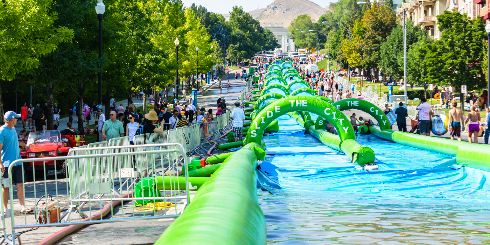
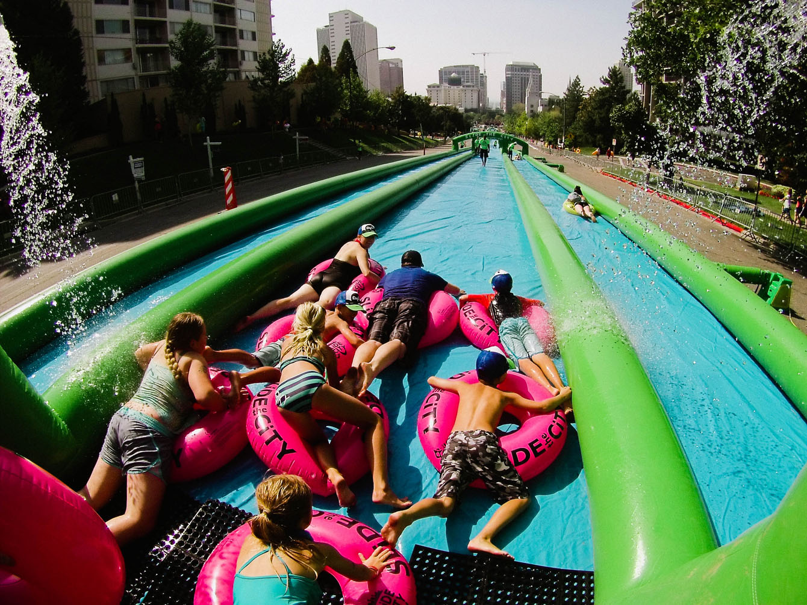
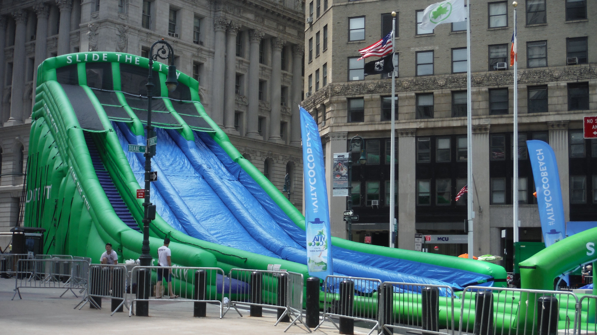
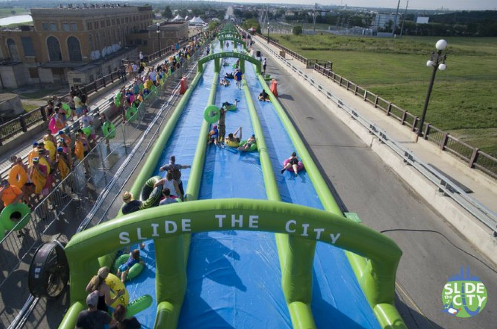
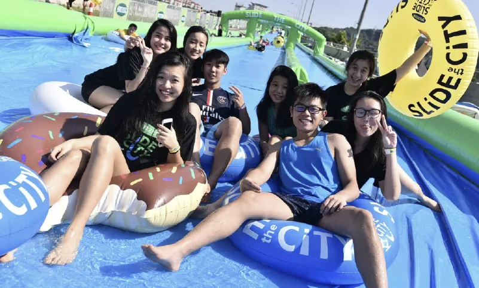

01 - Registration & Entry Control
Ticket verification, attendee processing, wristband control, waiver handling, and front-gate coordination.
Large-scale public event delivery combining temporary infrastructure, visitor operations, venue setup, and on-ground execution for a city-scale inflatable water slide activation.
50,000+
Attendees
1,000 ft
Main slide footprint
100+
Vendor partnerships
1.5M+
Social media engagement





Slide the City was delivered as a high-volume public activation built around temporary venue infrastructure, attendee processing, queue management, attraction operations, tube circulation, and live-event coordination.
The project required structured setup and teardown, ticketed attendee handling, ride-flow management, equipment issue and recovery, staffing coordination, hygiene support, and on-site safety controls across the operating window.
Ticket verification, attendee processing, wristband control, waiver handling, and front-gate coordination.
Structured queuing, holding zones, movement control, and throughput management.
Launch sequencing, rider spacing, tube readiness, landing-zone control, and reset procedures.
Distribution, collection, counting, and recirculation of inflatable tubes and rider equipment.
Water supply, pump operations, pressure continuity, and technical readiness during live operations.
Risk monitoring, minor incident response, and escalation controls across high-density areas.
Attraction footprint setup, barricades, counters, signage, waiting zones, staff stations, and support areas.
On-ground attendee guidance, issue resolution, and public-facing coordination across live windows.
Continuous cleaning, wet-zone maintenance, waste handling, and reset support across shared areas.
Staff movement, replenishment, shift transitions, and back-of-house controls to sustain live operations.
Centralized oversight for timing, staffing, escalation, and inter-team coordination during setup and live hours.
Controlled dismantling, asset recovery, waste clearance, and site handback after event completion.
Operational Zones
Key Performance Metrics
Execution priorities focused on safe participant flow, reduced queue friction, fast issue resolution, reliable asset circulation, and clean public-facing presentation.
Operational controls remained active across entry control, flow sequencing, safety coverage, site readiness, and reset discipline to keep every zone working as one system.